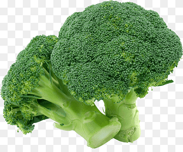
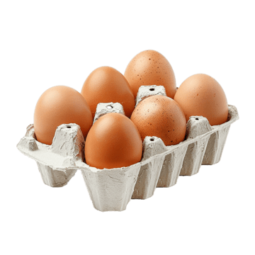

Clasificación de las Vitaminas
Las vitaminas son micronutrientes esenciales que se dividen en liposolubles y hidrosolubles. Aquí encontrarás sus funciones y principales fuentes alimenticias:
| Vitamina | Tipo | Función | Fuentes |
|---|---|---|---|
| A | Liposoluble | Visión, crecimiento y tejidos. |  Zanahoria, hígado |
| D | Liposoluble | Absorción de calcio y huesos fuertes. | Pescado, sol |
| E | Liposoluble | Antioxidante, protege las células. | Aceites, frutos secos |
| K | Liposoluble | Coagulación sanguínea. |  Espinaca, brócoli |
| C | Hidrosoluble | Inmunidad y cicatrización. | Naranja, kiwi |
| B1 | Hidrosoluble | Metabolismo energético. | Cereales, carne |
| B6 | Hidrosoluble | Neurotransmisores y glóbulos rojos. |  Plátano, pescado |
| B12 | Hidrosoluble | Sistema nervioso y glóbulos rojos. |  Carne, huevo |
| B9 (Ácido Fólico) | Hidrosoluble | Formación celular, embarazo. | Espinaca, lentejas |